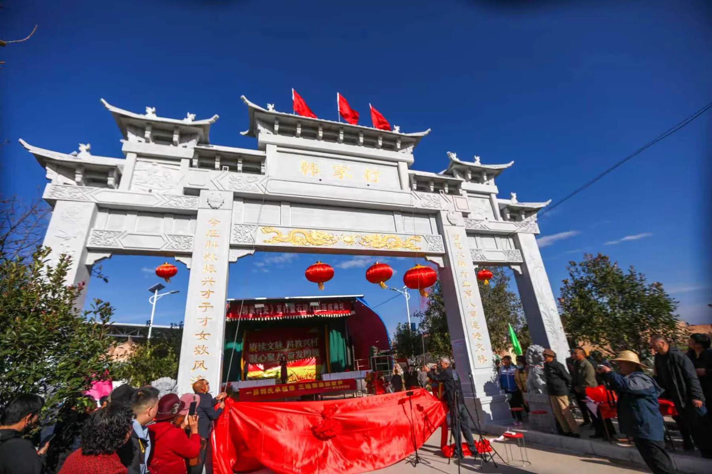
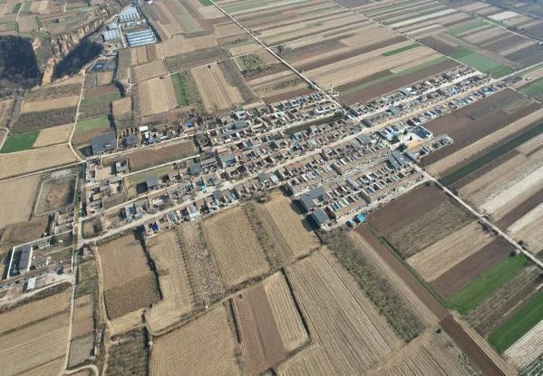
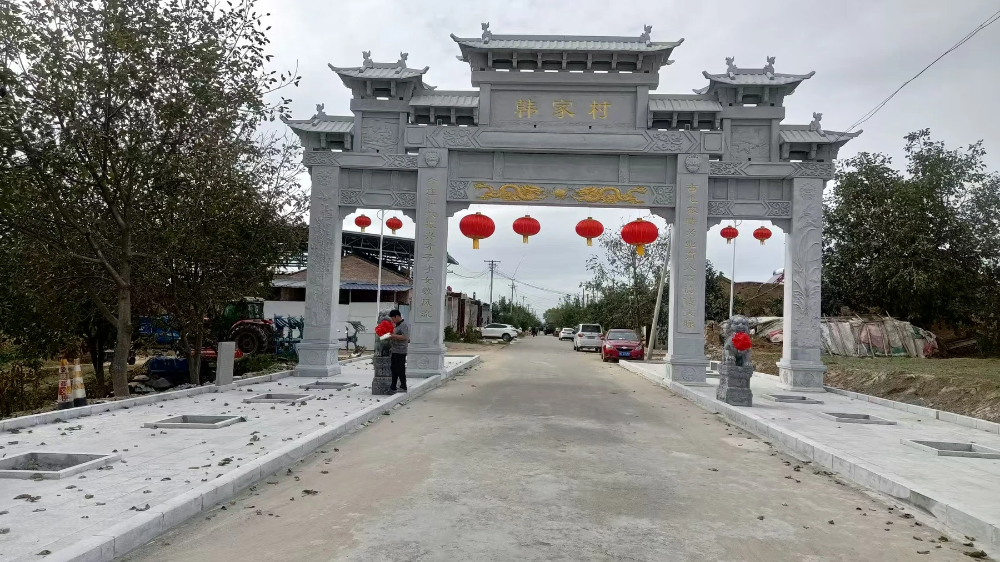

古囤庄的往事
村史前言引《旬邑县志》记载，建村于明崇祯十五年（1642）。书中也收录唐初建村等传说，并继续探寻其来历。
《韩家村史》前言、第一至三章
 《韩家村史》翻开村史 →
《韩家村史》翻开村史 →
OUR HOME · 走进韩家
在韩家村，韩、刘两姓人家比邻而居。
韩家村位于陕西省旬邑县土桥镇，由韩家与韩家堡子合并而成。这里扎根黄土高原，以农耕为生，也把读书求知的愿望，一代代传给孩子。
老院落、窑洞小学、泛黄契约，记录着祖辈的生活；一座新牌楼、一次乡亲相聚，又让村庄的记忆在今天延续。
翻开韩家的岁月
故土有形，乡情无界
村庄鸟瞰 · 影像选自《韩家村史》
A WALK THROUGH TIME · 岁月留痕
从口耳相传，到纸上留存。
在村庄的变迁中，寻找不曾断开的文脉。
村史前言引《旬邑县志》记载，建村于明崇祯十五年（1642）。书中也收录唐初建村等传说，并继续探寻其来历。
《韩家村史》前言、第一至三章耕地买卖、兄弟分家，一纸契约留下祖辈的姓名与生活痕迹。村民珍藏的老文书，成为探寻村史的重要依据。
《韩家村史》第三章囤庄四合院、胡同窑与旧村遗迹，连着人们对故居的记忆。村史用图表和照片梳理村貌变迁，记录新旧村庄的更替。
《韩家村史》第五章2023 年窑洞小学联谊重温同窗情谊，2025—2026 年的村史研讨继续汇聚乡亲记忆，让往事有据可查、有书可读。
《韩家村史》前言影像、感慨歌赋关于来历：书中并列收录历史记载、口述传说及作者推论；本网站保留这种区别，不将传说或推论作为定论。
 窑洞小学旧址 · 村史影像
窑洞小学旧址 · 村史影像THE SPIRIT OF LEARNING · 书声不息
“再苦也要把书念，
努力奋斗不间断。”
曾经的窑洞教室、相伴的油灯，是几代韩家学子的共同记忆。从这片土地出发，村中学子走向教育、医疗、工程、工商等领域；求知、担当与实干，也成为村庄精神的一部分。
引文选自《韩家村史》“歌颂窑洞小学”。
读懂韩家的耕读传承LIVING HERITAGE · 乡风有温度
一街一院，一席一礼。
乡风，是故乡最亲切的模样。
村史记述，村民有清晨打扫门外街道、整齐收置柴草与器具的习惯。干净的院落，也是对生活的认真。
从长幼入席到端饭上菜，待客礼仪里藏着对长辈与来客的尊重，也承载着乡邻共同遵守的传统。
村中大事，乡亲共同出力。契约中记下的“搭庄”，则是农具、人力与畜力互补的农耕智慧。
根据《韩家村史》第三章、第六章摘编，展现书中记录的传统生活。
2026 年 10 月 18 日 · 牌楼落成
《韩家村史》发行这一天，乡亲们在新落成的石牌门楼前相聚。抬头看，正中匾额写着“韩家村”，两侧门柱各刻一行字。侧门上方，一边是耕牛播种，一边是学童苦读，石匠把联中的“耕”和“读”刻成了画。
上联古屯农耕为业育人育德传文脉
下联今庄科教振兴才子才女数风流
“古屯”对“今庄”，地名里的时间从祖辈走到今天。前人靠农耕立业，也把如何待人、怎样做事教给孩子。“育人育德”接着“传文脉”，说的是这一代学会了，再教给下一代。
下联把“才子”和“才女”并排刻在村口，儿子和女儿的学业都是家乡的骄傲。“数风流”让人想起《沁园春·雪》里的“数风流人物，还看今朝”。在韩家村，这句赞许落在从村里走出去读书的孩子们身上。
据《韩家村史》第七章，从 2003 年至该书编写时，村中走出了 6 名博士研究生、25 名硕士研究生，其中女生 16 名。本次提供的楹联释文记为 6 位博士、24 位硕士，两份材料的硕士人数相差一位。

MOMENTS OF HOME · 乡情影像
真实的镜头，熟悉的笑脸。
看见韩家村，也看见我们。
点击照片查看大图 · 影像由网站委托方提供
THE VILLAGE CHRONICLE · 以史留乡
从先辈留下的文书，到村貌、教育与乡俗，《韩家村史》将零散的往事汇成一部属于村庄的长卷。读史，是回望来路，也是把故乡交给未来。
阅读村史精选原著 / 韩九强 编著《韩家村史》
本站为文化宣传摘编，内容出处见阅读页。
FIND OUR HOME · 记住这个地方
陕西省 · 咸阳市 · 旬邑县 · 土桥镇
循着村史认识一座村庄，
带着乡情记住一方水土。